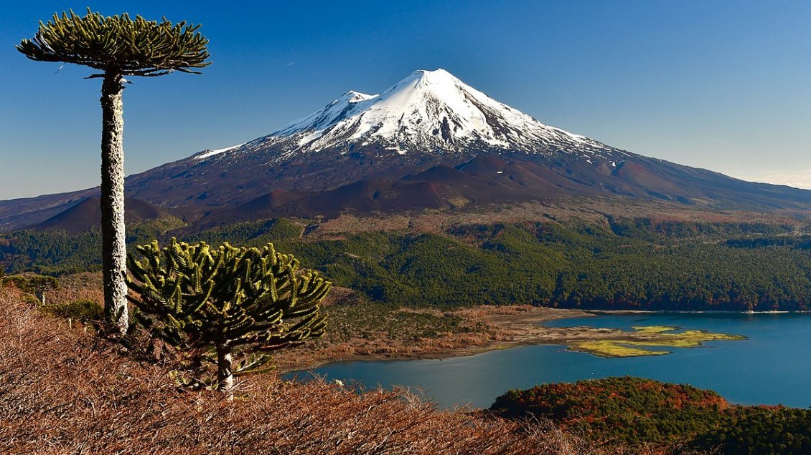

El Llaima es un volcán ubicado en la Región de La Araucanía (Chile). De forma
cónica relativamente regular y simétrica, clasificado como estratovolcán,
el Llaima tiene una altitud de 3.195 m. Se ubica en la zona precordillerana
de La Frontera, a 72 km al noreste de la ciudad de Temuco, desde donde es visible.

Última Erupción
El último ciclo eruptivo se inició en mayo 2007 con una débil de emisión de
ceniza seguida de una erupción estromboliana moderada con generación de
lahares en enero de 2008, que culminó en abril de 2009 con una erupción
estromboliana vigorosa.
Volcán Villarrica
El volcán Villarrica (en mapudungun: Ruka Pillan, 'casa del pillán') es un
estratovolcán chileno de 2847 m s. n. m. 2450 m, contando desde la base,
ubicado en los Andes meridionales. Está situado en el límite de las
provincias de Cautín (región de la Araucanía) y Valdivia (región de Los Ríos),
en Chile, entre los lagos Villarrica y Calafquén. Es uno de los más
activos de Sudamérica, 2 y tiene una forma cónica casi perfecta.
Última Erupción
Tuvo una erupción reciente, 2015, que levantó nuevamente la alerta sobre
uno de los volcanes más peligrosos de Chile, que además tiene una laguna
de lava, cuya característica comparte con muy pocos volcanes en el
mundo como Masaya (Nicaragua) Erebus (Antártica)y Nyriagongo (Congo),
entre otros, que aumenta su peligrosidad.
Este miércoles, el Servicio Nacional de Geología y Minería (Sernageomin)
decretó alerta amarilla debido a una nueva actividad del volcán
Villarrica. La explosión generó una columna de gases y cenizas de
600 metros de altura y motivó al Servicio Nacional de Prevención
y Respuesta ante Desastres (Senapred) a declarar alerta amarrilla
para las comunas de Villarrica, Pucón, Curarrehue y Panguipulli.
Volcán Popocatépetl
Popocatepetl es un volcán activo ubicado en el centro de México, a sólo 55
kilómetros al sudeste del Distrito Federal. Es del tipo Estratovolcán, tiene
una altura de 5.452 metros sobre el nivel del mar y el diámetro mayor del cráter
alcanza los 900 metros. La actividad del volcán es moderada pero constante.
En los últimos veinte años tuvo repetidas fumarolas compuestas de vapor y gases
e imprevistas expulsiones menores de ceniza y material volcánico.En Náhuatl,
lengua uto-azteca, Popocatepetl significa "Montaña que humea".
Última Erupción
La última vez que el Popocatépetl registró actividad considerada como "violenta"
fue el 18 y 19 diciembre del año 2000. De acuerdo con los informes de Protección
Civil, la tarde del 18 de diciembre el volcán entró en erupción al arrojar una
gran cantidad de piedras que alcanzaron hasta un metro de diámetro, ante esta
situación miles de habitantes tuvieron que ser evacuados en Puebla.